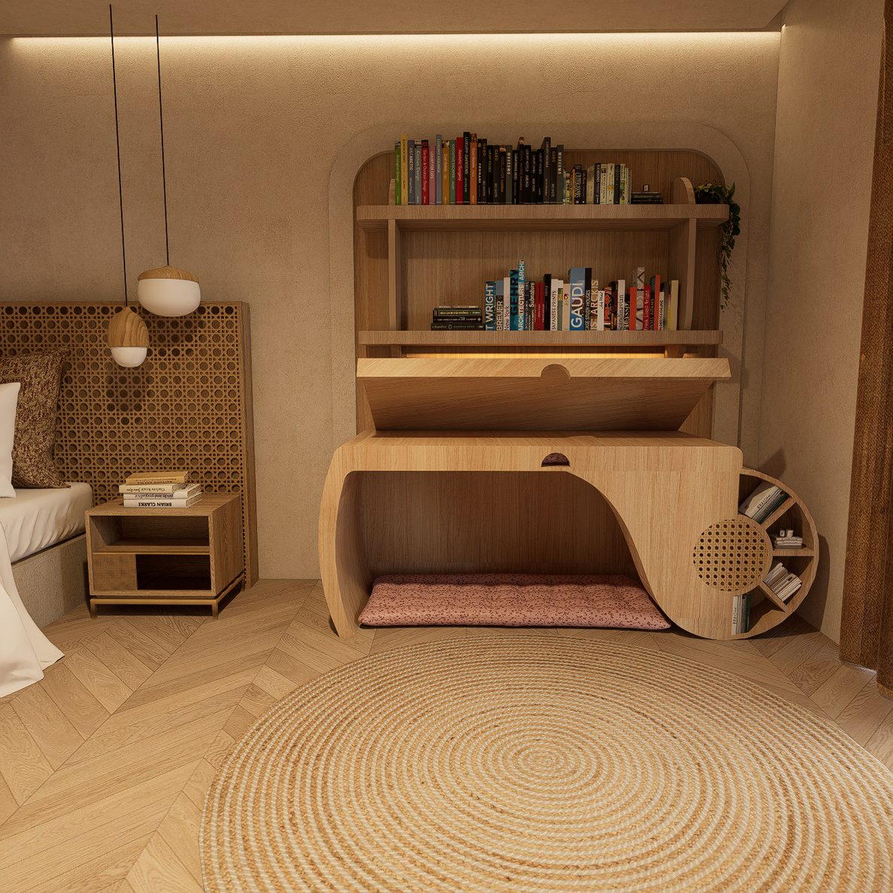
06 / 06 — Mobilier multifonctionnel
Refuge
Transformer le bureau en refuge intime.
01 — Concept
Conception et fabrication d'une table de chevet multifonctionnelle, pensée pour les petits espaces, notamment les chambres d'étudiants. Ce meuble combine plusieurs fonctions — poste de travail, couchage, rangement — dans un seul objet compact et fonctionnel.
Le plan de travail inclinable pivote à 30° et s'ouvre sur 6 cm ; étagères, moteur et canage rotin composent un poste complet, convertible en couchage. Bien-être, concentration et repos coexistent dans un mobilier à la fois fonctionnel, adaptable et confortable.
Idée de sketch
De la maquette d’atelier au prototype : le Refuge est né d’une recherche sur le poste de travail comme refuge. Croquis de principe, explorations de volume, puis premier prototype.
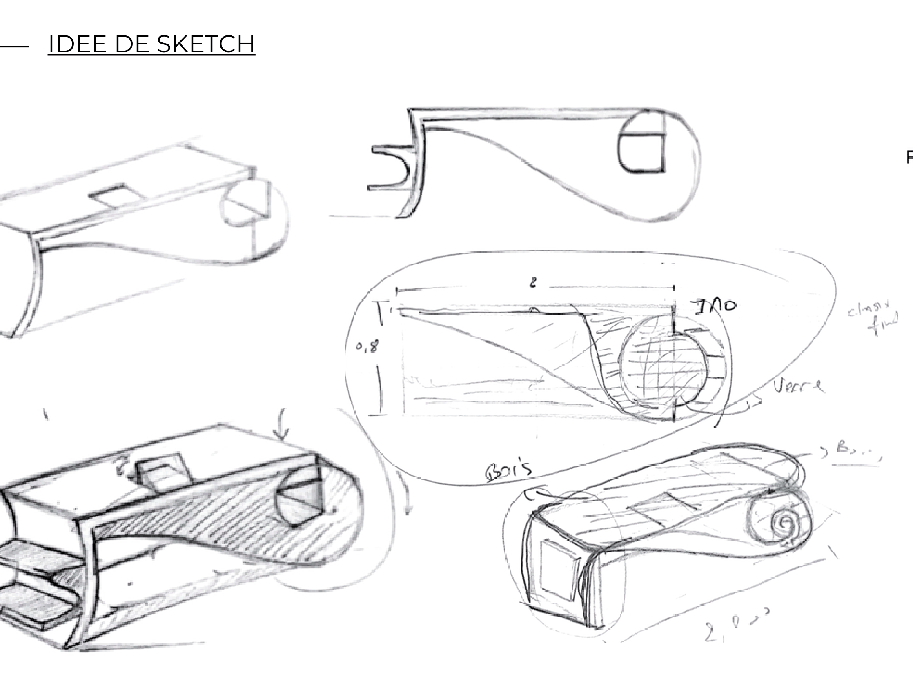
Planche de croquis : explorations de volume, studies de l’ouverture du plan de travail et reports des premières cotes.
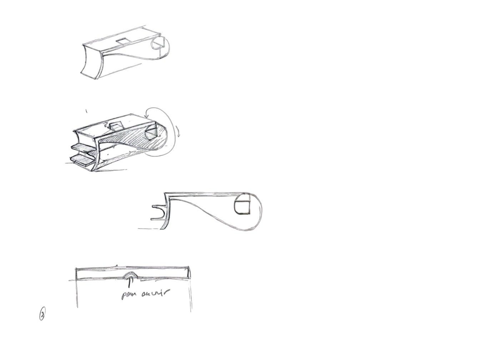
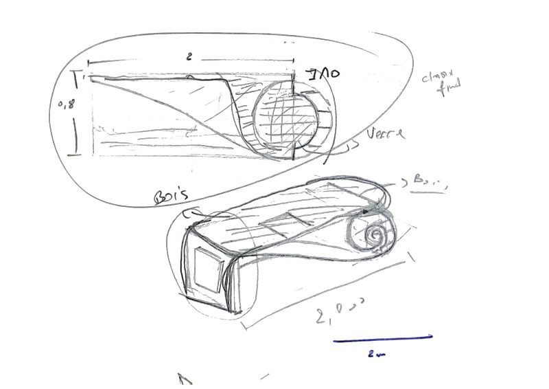
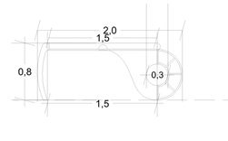
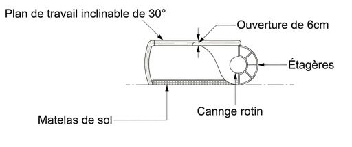
Les vues
Un poste de travail complet, convertible en couchage : la lecture, le repos et l’isolement tiennent dans un seul meuble.
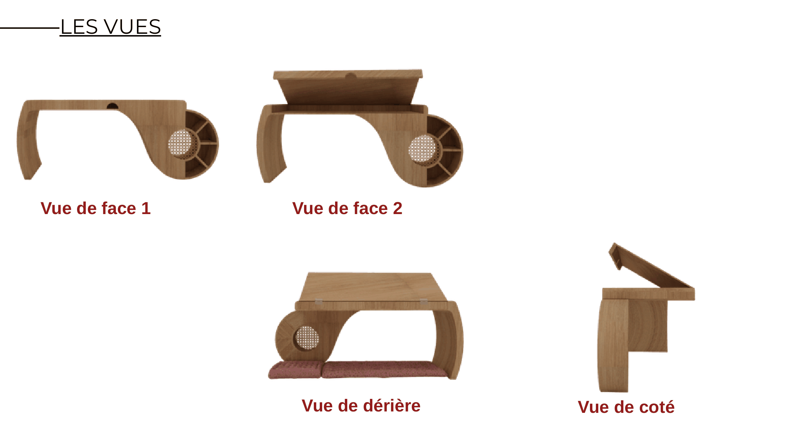
Planche des quatre vues de l’objet, cotées et légendées.
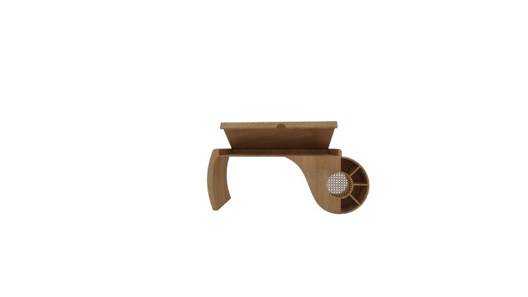
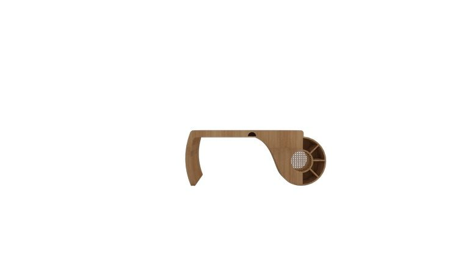
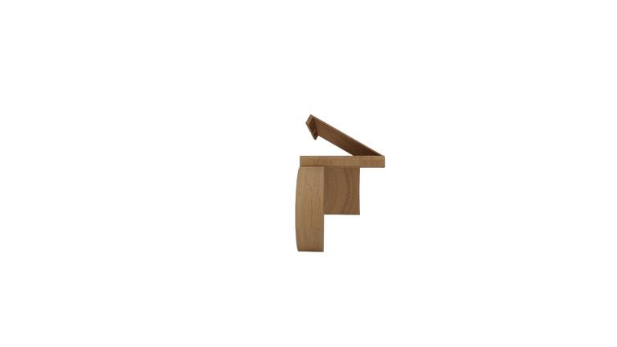
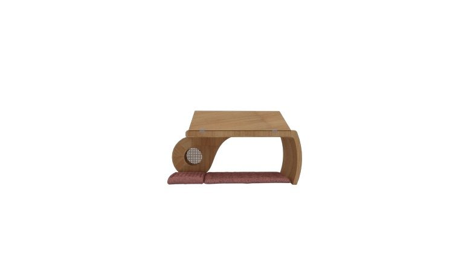
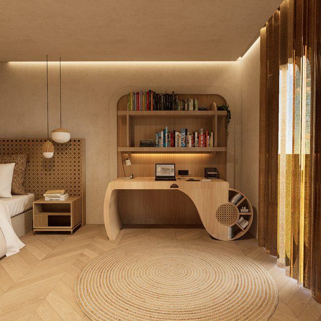
Détails techniques & le meuble réalisé
Le plan de travail inclinable pivote à 30° et s’ouvre sur 6 cm ; étagères, moteur et canage rotin composent un poste complet, convertible en couchage. Bien-être, concentration et repos coexistent dans un mobilier à la fois fonctionnel, adaptable et confortable.
Le prototype a été construit et tested dans sa version finale : la version bâtie confirme les choix de l’étude, en particulier l’ouverture du plan de travail et l'articulation du canage.
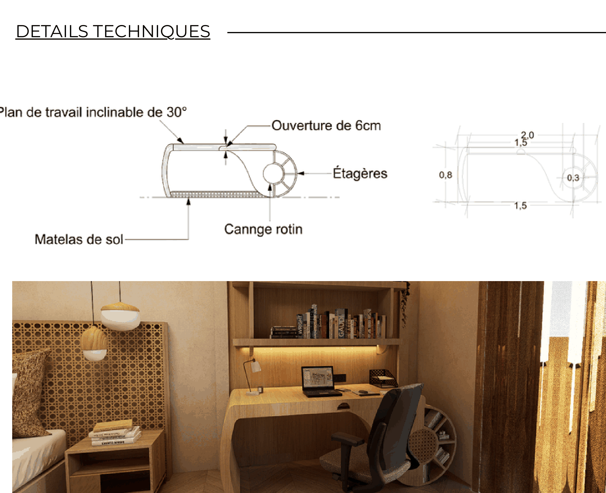
Coupe cotée du poste : plan de travail inclinable de 30°, ouverture de 6 cm, étagères, canage rotin et matelas de sol, avec les cotes 1,5 / 0,8 / 0,3 / 2,0 et le rendu en contexte.
| Organe | Description |
|---|---|
| Plan de travail | Inclinable à 30° — s’ouvre sur 6 cm |
| Étagères | Rangement intégré au corps du meuble |
| Moteur | Mécanisme d’inclinaison du plan de travail |
| Canage rotin | Panneau tressé —structure du dossier et du couchage |
| Matelas de sol | Couchage de 6 cm, convertible depuis le poste de travail |
Cotes relevées sur la planche de détail : 1,5 / 0,8 / 0,3 / 2,0.
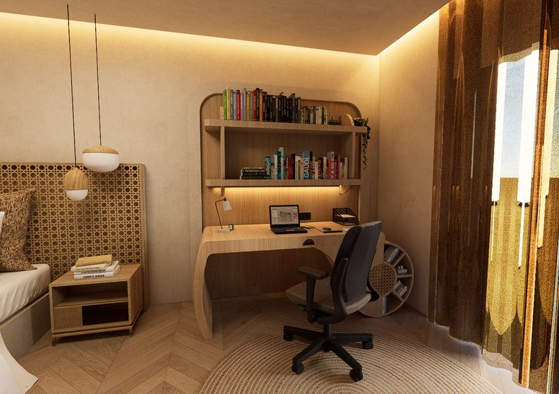
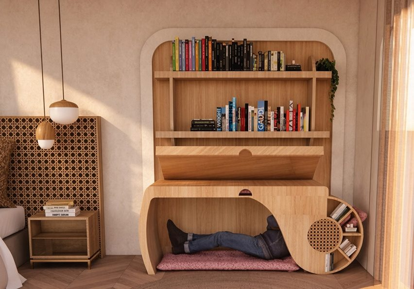

04 — Contact